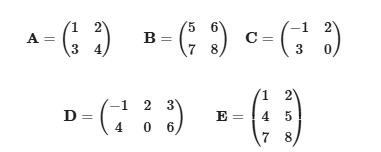

Linear Algebra
1. Basic Operations on Matrices
Given Matrices:

1. Calculations:
1.1) \(A + B\)
1.2) \(B - A\)
1.3) \(A + C\)
1.4) \(D + E\) (not possible)
- Matrix addition requires equal dimensions. Since \(D\) is \(2 \times 3\) and \(E\) is \(3 \times 2\), matrix addition is not defined.
2. Scalar Multiplications:
2.1) \(\frac{1}{2} A\)
2.2) \(2 B\)
2.3) \(-3 C\)
2.4) \(4 D\)
3. Matrix Multiplications:
3.1) \( A \cdot B \):
3.2) \( B \cdot A \):
3.3) \( A \cdot D \):
- Matrix multiplication requires the number of columns in \( A \) to equal the number of rows in \( D \).
- Since \( A \) is \( 2 \times 2 \) and \( D \) is \( 2 \times 3 \), matrix multiplication is not defined.
3.4) \( D \cdot E \):
2. Determinants 2x2 and 3x3
1. Matrix \(A\):
The determinant of a 2x2 matrix is calculated as:
2. Matrix \(B\):
The determinant of matrix \(B\) is calculated as:
3. Matrix \(C\):
The determinant of matrix \(C\) is calculated as:
Determinants of 3x3 Matrices:
4. Matrix \(D\):
The determinant of a 3x3 matrix is calculated using cofactor expansion:
Next, calculate the determinant of the submatrices:
Simplify the calculation:
5. Matrix \(E\):
The determinant of matrix \(E\) is calculated using cofactor expansion:
Expanding each submatrix determinant:
Simplifying further:
Final calculation:
6. Matrix \(F\):
The determinant of matrix \(F\) is calculated using cofactor expansion:
Expanding each submatrix determinant:
Simplifying further:
Final calculation:
Final Results:
-
2x2 Matrices:
- \(\text{det}(A) = 5\)
- \(\text{det}(B) = -2\)
- \(\text{det}(C) = -6\)
-
3x3 Matrices:
- \(\text{det}(D) = -30\)
- \(\text{det}(E) = -54\)
- \(\text{det}(F) = 60\)
3. Determinants using Laplace's Expansion
Matrix \( A \):
To calculate the determinant:
Expanding the submatrices:
Matrix \( B \):
To calculate the determinant:
Expanding the submatrices:
Matrix \( C \):
For a 4x4 matrix, the determinant can be expanded recursively using cofactor expansion. Calculating this explicitly involves iterating through all minors, which can be implemented programmatically.
Matrix \( D \):
Similarly, for a 5x5 matrix, the determinant can be computed using cofactor expansion. This computation is very detailed and typically performed using a symbolic mathematics library like SymPy.
from sympy import Matrix
# Define the matrices
A = Matrix([[2, 3, 1],
[1, 4, 0],
[3, 2, 1]])
B = Matrix([[2, 3, 1],
[1, 4, 0],
[3, 2, 0]])
C = Matrix([[2, 3, 1, 4],
[1, 0, 0, 6],
[3, 2, 1, 5],
[2, 1, 4, 0]])
D = Matrix([[2, 3, 1, 4, 5],
[1, 4, 0, 0, 7],
[3, 0, 0, 0, 0],
[2, 1, 4, 3, 2],
[1, 2, 3, 4, 5]])
# Calculate the determinants
det_A = A.det()
det_B = B.det()
det_C = C.det()
det_D = D.det()
# Print the results
print(f"Determinant of A: {det_A}")
print(f"Determinant of B: {det_B}")
print(f"Determinant of C: {det_C}")
print(f"Determinant of D: {det_D}")
Summary:
- \(\text{det}(A) = -5\)
- \(\text{det}(B) = -10\)
- \(\text{det}(C) = -75\)
- \(\text{det}(D) = 231\)
4. Determinants from the Gauss Method and Triangular Matrices
Let's solve the determinants of the given matrices \( A \) and \( B \) by reducing them to upper triangular form and then taking the product of their diagonal elements.
Matrix \( A \):
Step 1: Row Operations to Form an Upper Triangular Matrix We can eliminate the element at position \((2, 1)\) (\(-18\)) by applying a row operation. Multiply \( R_1 \) (row 1) by \(\frac{-18}{12} = -\frac{3}{2}\) and add it to \( R_2 \):
Performing the operation:
$$
R_2 = \begin{pmatrix} -18 & -4 \end{pmatrix} + \left(-\frac{3}{2} \cdot \begin{pmatrix} 12 & 3 \end{pmatrix}\right)
$$
$$
R_2 = \begin{pmatrix} -18 & -4 \end{pmatrix} + \begin{pmatrix} -18 & -4.5 \end{pmatrix}
$$
$$
R_2 = \begin{pmatrix} 0 & -8.5 \end{pmatrix}
$$
The updated matrix \( A \) is:
Step 2: Determinant Calculation
The determinant of an upper triangular matrix is the product of its diagonal elements:
$$
\text{det}(A) = 12 \cdot (-8.5) = -102
$$
Matrix \( B \):
Step 1: Row Operations to Form an Upper Triangular Matrix First, eliminate the elements below the diagonal in column 1 (\( R_2(1) = 4 \) and \( R_3(1) = 7 \)): 1. Multiply \( R_1 \) by \( -4 \) and add it to \( R_2 \): $$ R_2 \to R_2 - 4 \cdot R_1 $$
Performing the operation:
$$ R_2 = \begin{pmatrix} 4 & 5 & 6 \end{pmatrix} - 4 \cdot \begin{pmatrix} 1 & 2 & 3 \end{pmatrix} $$ $$ R_2 = \begin{pmatrix} 4 & 5 & 6 \end{pmatrix} - \begin{pmatrix} 4 & 8 & 12 \end{pmatrix} $$ $$ R_2 = \begin{pmatrix} 0 & -3 & -6 \end{pmatrix} $$
- Multiply \( R_1 \) by \( -7 \) and add it to \( R_3 \): $$ R_3 \to R_3 - 7 \cdot R_1 $$
Performing the operation:
$$ R_3 = \begin{pmatrix} 7 & 8 & 9 \end{pmatrix} - 7 \cdot \begin{pmatrix} 1 & 2 & 3 \end{pmatrix} $$ $$ R_3 = \begin{pmatrix} 7 & 8 & 9 \end{pmatrix} - \begin{pmatrix} 7 & 14 & 21 \end{pmatrix} $$ $$ R_3 = \begin{pmatrix} 0 & -6 & -12 \end{pmatrix} $$
The updated matrix \( B \) is:
Step 2: Eliminate \( R_3(2) \) Next, eliminate the element at position \( (3, 2) \) (\(-6\)) by performing: $$ R_3 \to R_3 - 2 \cdot R_2 $$
Performing the operation:
$$
R_3 = \begin{pmatrix} 0 & -6 & -12 \end{pmatrix} - 2 \cdot \begin{pmatrix} 0 & -3 & -6 \end{pmatrix}
$$
$$
R_3 = \begin{pmatrix} 0 & -6 & -12 \end{pmatrix} - \begin{pmatrix} 0 & -6 & -12 \end{pmatrix}
$$
$$
R_3 = \begin{pmatrix} 0 & 0 & 0 \end{pmatrix}
$$
The final matrix \( B \) is:
Step 3: Determinant Calculation Since the last row is all zeros, the determinant is: $$ \text{det}(B) = 0 $$
Final Results:
1. \(\text{det}(A) = -102\)
2. \(\text{det}(B) = 0\)
5. Inverse of a Matrix from the formula
1. Find the inverse matrix for \( A \):
The given matrix is:
Step 1: Check if the determinant of \( A \) is non-zero
The determinant of \( A \) is computed as:
Simplify the determinant:
Since \( \text{det}(A) \neq 0 \), the matrix is invertible.
Step 2: Compute the inverse of \( A \)
The formula for the inverse of a 3x3 matrix is:
where \( \text{adj}(A) \) is the adjugate matrix.
Compute the adjugate matrix:
- Cofactor matrix:
- Transpose the cofactor matrix to get \( \text{adj}(A) \):
Formula for the Inverse of a 3x3 Matrix:
where \( \text{adj}(A) \) is the adjugate matrix.
Cofactor Matrix of \( A \):
Adjugate Matrix of \( A \):
Inverse Matrix \( A^{-1} \):
Verification:
Compute \( A \cdot A^{-1} \):
Since \( A \cdot A^{-1} = I \), the result is verified.
2. Determine the rank of \( B \):
The given matrix is:
Step 1: Row Reduce \( B \) to Row Echelon Form First, use the first row to eliminate the first element in rows 2 and 3:
- \( R_2 \to R_2 + \frac{1}{4}R_1 \)
- \( R_3 \to R_3 - \frac{1}{2}R_1 \)
The updated matrix is:
Then, use the second row to eliminate the second element in row 3:
- \( R_3 \to R_3 - \frac{10}{7}R_2 \)
The updated matrix is:
Step 2: Count Non-Zero Rows The matrix has 3 non-zero rows, so the rank of \( B \) is: $$ \text{Rank}(B) = 3 $$
Final Results:
- Inverse of \( A \):
- Rank of \( B \): $$ \text{Rank}(B) = 3 $$
6. Inverse of a Matrix using the Gauss Method
Matrix A
Given:
Step 1: Augment Matrix A with the Identity Matrix
Step 2: Perform Row Operations
- Divide the first row by 1 (make the pivot of the first column equal to 1):
- Divide the second row by -2 (make the pivot of the second column equal to 1):
- Perform elimination to make all entries except the pivots in the second column equal to 0:
Step 3: Extract the Inverse
The inverse of A is on the right-hand side:
Matrix B
Given:
Step 1: Augment Matrix B with the Identity Matrix
Step 2: Perform Row Operations
- Divide the first row by 2 (make the pivot of the first column equal to 1):
- Subtract 5 times the first row from the second row to make the second column’s first entry zero:
- Divide the second row by 0.5 (make the pivot of the second column equal to 1):
- Subtract 0.5 times the second row from the first row to make the second column’s first entry zero:
Step 3: Extract the Inverse
The inverse of B is on the right-hand side:
Matrix C
Given:
Step 1: Augment Matrix C with the Identity Matrix
Step 2: Perform Row Operations
- Swap the rows to make the pivot of the first column non-zero:
- Subtract 2 times the second row from the first row to make the second column’s first entry zero:
Step 3: Extract the Inverse
The inverse of C is on the right-hand side:
7. Linear Equations old school
System 1
Equations:
1. \( 3x - 2y = 5 \)
2. \( 2x + 3y = 7 \)
Step 1: Solve Equation 1 for \( x \)
From \( 3x - 2y = 5 \), solve for \( x \):
Step 2: Substitute \( x \) into Equation 2
Substitute \( x = \frac{5 + 2y}{3} \) into \( 2x + 3y = 7 \):
Simplify:
Multiply through by 3 to eliminate the fraction:
Combine terms:
Step 3: Solve for \( x \)
Substitute \( y = \frac{11}{13} \) into \( x = \frac{5 + 2y}{3} \):
Solution for System 1:
System 2
Equations:
- \( 2x - 3y = 10 \)
- \( 4x + 5y = 20 \)
Step 1: Solve Equation 1 for \( x \)
From \( 2x - 3y = 10 \), solve for \( x \):
Step 2: Substitute \( x \) into Equation 2
Substitute \( x = \frac{10 + 3y}{2} \) into \( 4x + 5y = 20 \):
Simplify:
Combine terms:
Step 3: Solve for \( x \)
Substitute \( y = 0 \) into \( x = \frac{10 + 3y}{2} \):
Solution for System 2:
System 3
Equations:
- \( 2x - y + z = 3 \)
- \( x + 2y - z = 1 \)
- \( 3x - y + 2z = 11 \)
Step 1: Eliminate \( z \) using Equations 1 and 2
Add Equations 1 and 2:
Simplify:
Step 2: Substitute \( y = 4 - 3x \) into Equation 3
Substitute into \( 3x - y + 2z = 11 \):
Simplify:
Step 3: Solve for \( x \)
Substitute \( y = 4 - 3x \) and \( z = \frac{15 - 6x}{2} \) into Equation 1:
Multiply through by 2 to eliminate the fraction:
Simplify:
Solution for System 3:
\( x, y, z \) can be determined as: